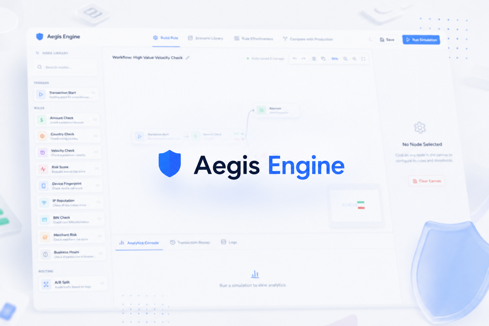
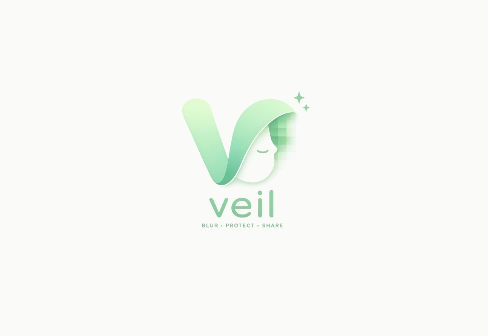
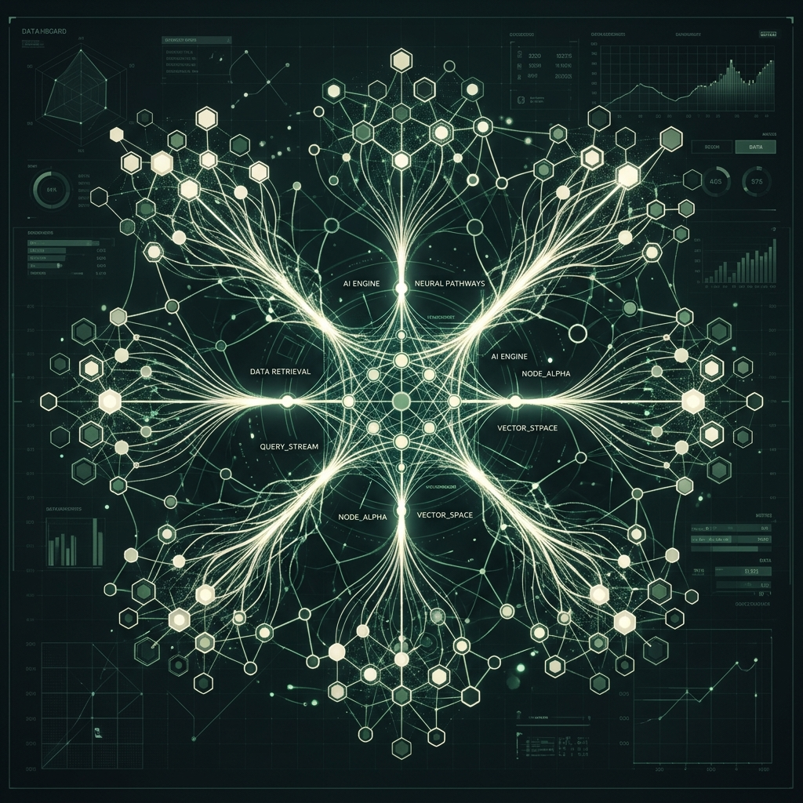
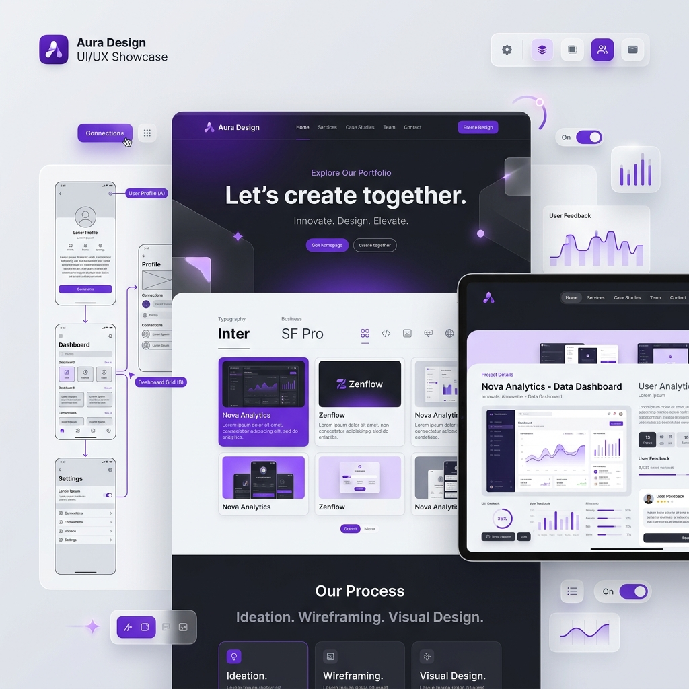
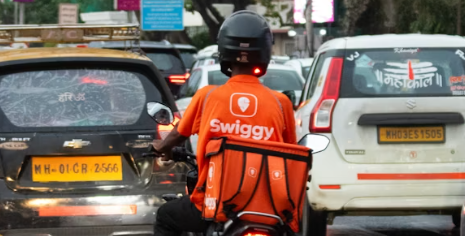

Projects I've built.
From zero-to-one AI tooling to high-fidelity design—work that moves the needle.

A no-code visual workflow builder empowering risk teams to design, simulate, and deploy complex fraud rules instantly.

Redefining video redaction from a 'professional editing task' to a single-tap privacy action using local Machine Learning.

A privacy-first, 100% local AI meeting intelligence platform. Turns recordings into actionable knowledge bases without cloud exposure.

Applying Hick’s Law to solve choice paralysis. A Gemini-powered "3 Meals Now" engine reducing Time-to-First-Decision (TTFD) to under 30 seconds.

Real-time workflow automation for clinical Panchakarma treatments using "Review-Aware" staff synchronization logic.

Analyzing Swiggy's wallet-topup feature at checkout. A behavioral UX dive into how converting delivery fees to wallet credit reduces cart drop-offs.